Abyssos: The Eighth Circle (Savage) is a high-end duty added in patch 6.21: Buried Memory. The fight can be unlocked by speaking to Nemjiji in Labyrinthos (8.4, 27.4) after completing Abyssos: The Eighth Circle.
The minimum ilvl required to enter this fight is 610.
I highly recommend Rinon and Scripe's P8S guide, as it explains a lot of mechanics really well.
Hephaistos will give either two supports or two DPS the Natural Alignment debuff, which deals DoT damage and makes it so that any other damage taken will wipe the party. These plays must not be clipped by AOEs or other people's stacks or spreads. He will then cast Twist Nature, which puts a meter over one of the Natural Alignment players. The meter shows which of two mechanics will go off first. The first meter will be a stack or spread, and the second meter will be fire or ice (3x 2-person stacks or 2x 3-person stacks).
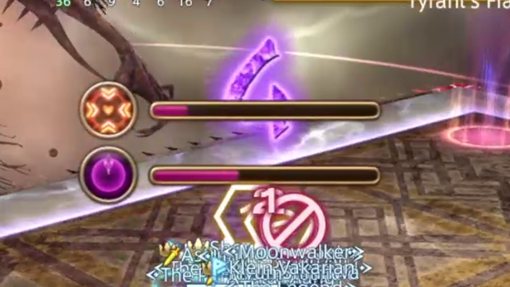 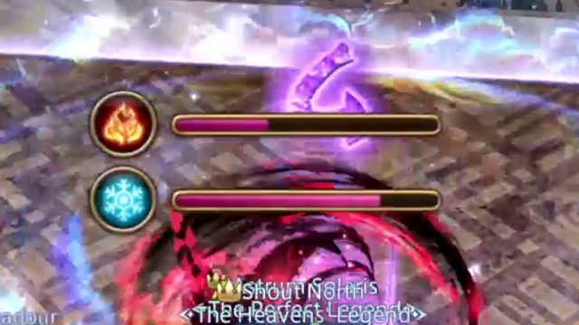Hephaistos will cast Tyrant's Flare, a set of baited AOEs. Players should stack up to bait AOEs and be ready to resolve the stack or spread afterwards.
Here is an example of stack then spread.
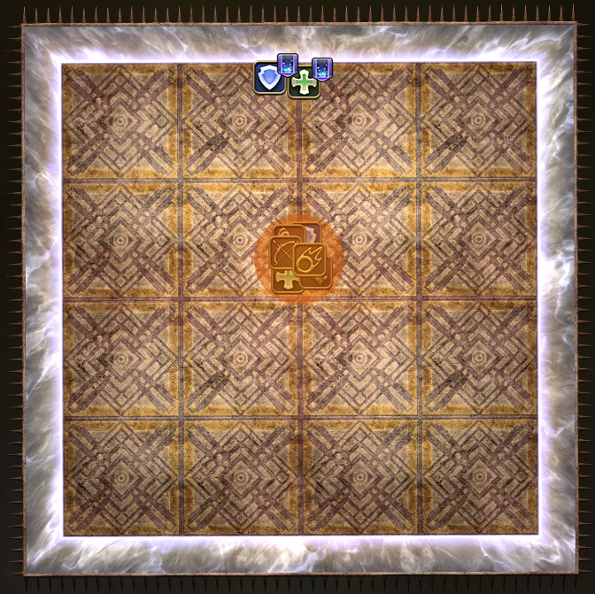 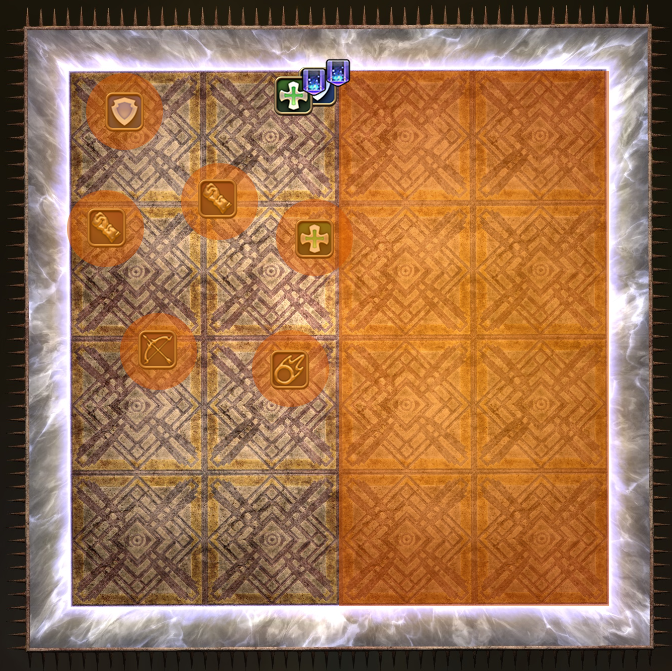Here is an example of spread then stack.
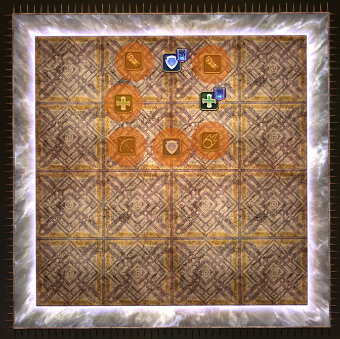 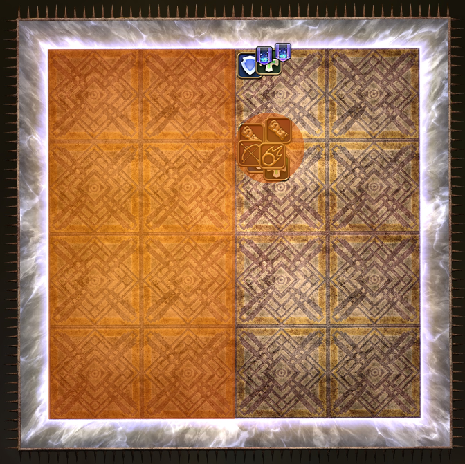After the stack and spread, a fire and ice meter will appear over the other Natural Alignment player's head. The fire attack is three sets of 2-person stacks, and the ice attack is 2 sets of 3-person stacks. Adds wil spawn and blast several rows, and only one of the top two rows of the field will be safe, and the safe row will alternate between fire / ice attacks (either it will be top row safe then second from the top safe, or vice versa). Have the two Natural Alignment players stack on each other in the middle of the field. The supports should be West and the DPS should be East. You will need two players to flex depending on which role has Natural Alignment players. If supports have the debuff, then melees should flex. If the DPS have the debuff, then tanks should flex. Healers will always be West and ranged DPS will always be East no matter what.
Let's assume the fire attack happens first. Unlike stack into spread, it doesn't change much which goes first for fire or ice. The fire attack is three sets of 2-person stacks. The Natural Alignment players will always be near the center between the top two rows. The supports are West, the DPS are right, and the tank / melee flexers should be mid but on the other side of the row away from the Natural Alignment players. For each pair, one player should be far (near the edge of a square) and one player should be close (on the triangle near the edge). Fire is baited on the three farthest players. It's important that the non-baiter in your pair is on the triangle, as being too far will bait two stacks in your pair and guarantee death.
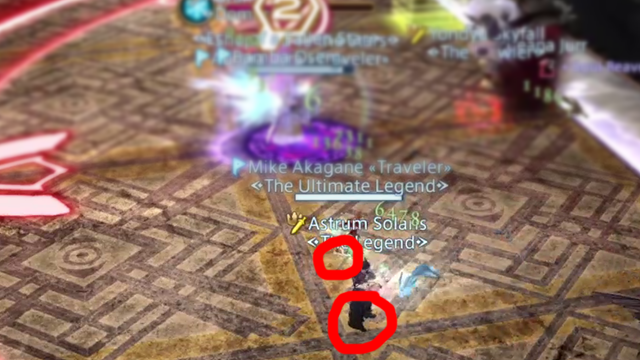For the tank / melee flexers, the fire baiter can be offset at an angle to ensure that they are the among the three farthest players, as the distance is relative to the Natural Alignment player in the center, and tank / melee flexers can't leave their box due to the AOEs / kill plane.
Here is an example where supports have Natural Alignment and melees flex.
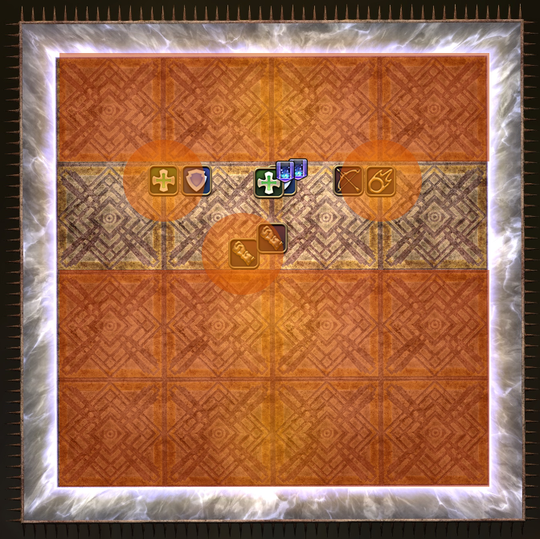Now let's move onto ice. After the first attack, the safe row will alternate between the top two rows. If it was the top row, then now it will be the second from the top row. The two sets of 3-person stacks will be baited on the two closest players. Those players should stand in the triangle while the other two in the stack stand near the edge of the square. The two tank / melee flexers should always be baiting ice.
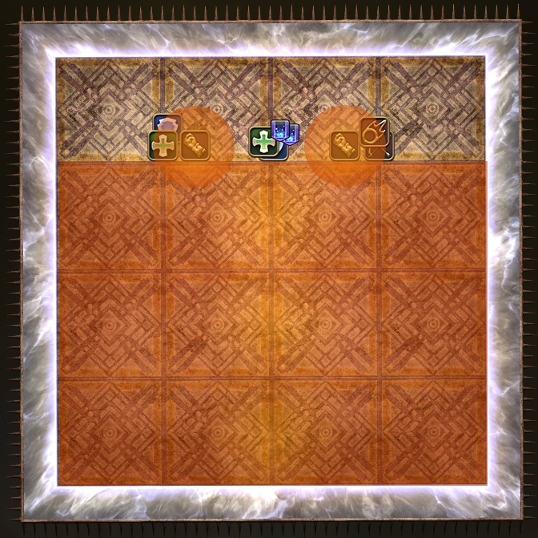Here is a video example where the DPS get Natural Alignment from the POV of a Natural Alignment player.
After this, he will do an Aioniopyr raidwide, a Tyrant's Unholy Darkness tankbuster, then begin his next mechanic.
Here are the main debuffs for High Concept 1. It is a puzzle-heavy mechanic, but take it one step at a time and you'll do fine! The debuffs are assigned at random, meaning anyone can get any debuff.
Hephaistos will cast High Concept, which deals heavy raidwide damage. After that, he will become untargetable and assign the above debuffs.
After the short ABG and two-person and three-person stacks go off, Hephaistos will cast Arcane Control and spawn two towers. The towers will either be water, lightning, or wind. The ABG players will now have elements over their head. Mixing with other ABG players will cause them to create concepts. Rather than tell you the combination of every ABG, I recommend using your eyes. If you have the element that matches the tower, go to the center and stack on another element player for a few seconds to mix. If you don't have the right element, just be in range for heals but don't interrupt mixing.
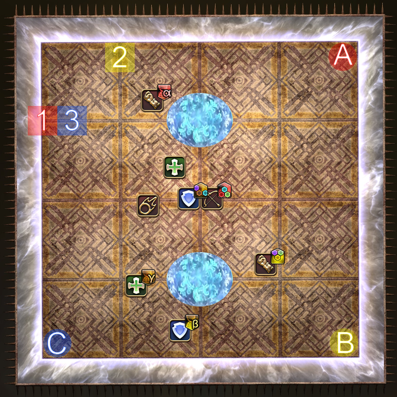Tower priority is Alpha always North, Gamma always South, and Beta adjust based on who they're with. An Ashing Blaze half-room cleave goes off at the same time, so be mindful of that and pre-position to where you have to go. The long Alpha / Beta / Gamma players will take the A / B / C markers. The players who just resolved towers will go NW and be done for the rest of the mechanic. The unused short ABG will go back to the marker they started at. The player and player will go to the remaining markers. The player will go to either A or B, and the stack player will go to B or C, depending on where the unused ABG player is. In the bottom example, the short Beta player was unused, meaning the player goes to A, and the player will go to C.
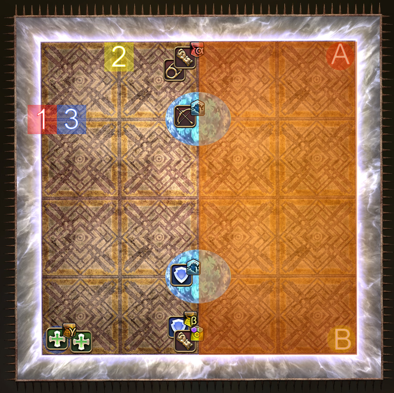 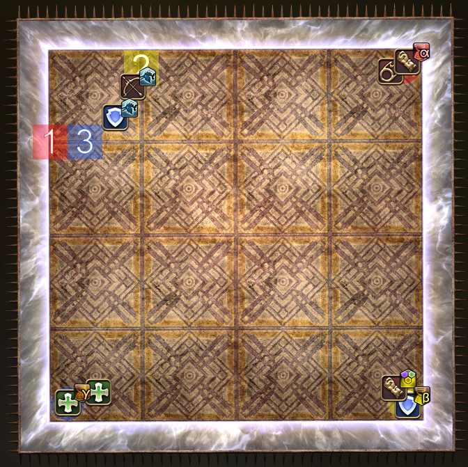After this, Hephaistos will cast Arcane Control again and spawn four towers. Two people from two markers will need to mix in order to cover four towers. Short debuffs go between the top two towers (unused short ABG, , and ), and long debuffs go between the bottom two towers (long , , ). An Ashing Blaze half-room cleave will happen again, so be on the safe side.
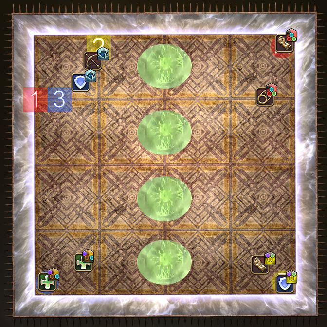 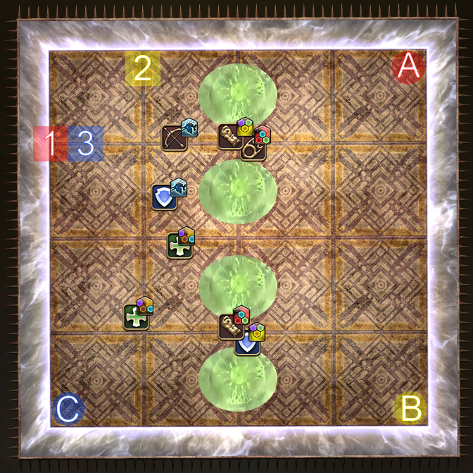 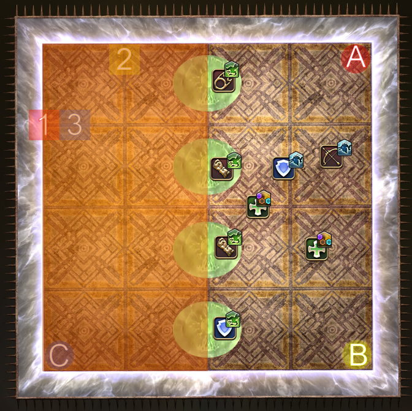Here is a video example of the mechanic from the 2-person stack's perspective.
When the towers are resolved, Hephaistos will cast Deconceptualize and remove all element debuffs. He'll do an Aioniopyr and begin Limitless Desolation.
Have supports spread West and DPS spread East. The order from North to South is the same as the Centaur2 tetraflare spreads from Phase 1 (T1 / M1, T2 / M2, H1 / R1, H2 / R2).
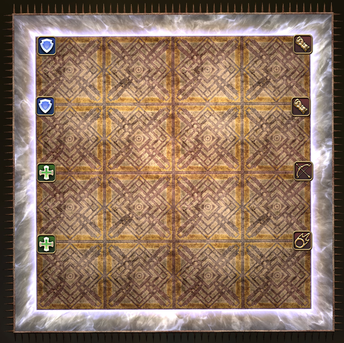Four sets of two spread AOEs will hit one support and one DPS at a time. Two towers will spawn at the same time, one on each side of the field. Players must take the towers in the order of when they were hit and when the tower spawned. Count to four and keep your eyes on the field to see where the tower spawns when you're hit. Supports will handle West towers and DPS will handle East towers, so just worry about your role's side. A large AOE will be baited on players right before they are supposed to take their tower. Standing on the intersection between squares is a safe way to bait your AOE without it covering your tower. As soon as the AOE is baited, walk into your tower.
Here is a video example of the mechanic from melee1's POV.
Natural Alignment 2 is like Natural Alignment 1 but with a few changes.
For spreads, I prefer static NA2. Everyone has THMR spots with Group 1 in the top side and Group 2 in the bottom side. People go to their static spots regardless of whether or not their have Natural Alignment.
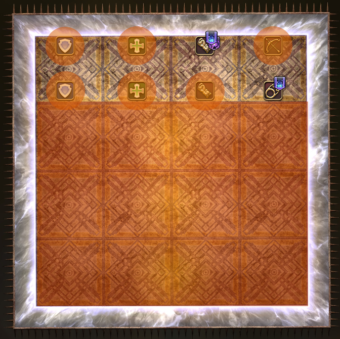For stacks, have the Natural Alignment players go East or West, wherever their role normally is, and have the rest of the party stack the other way.
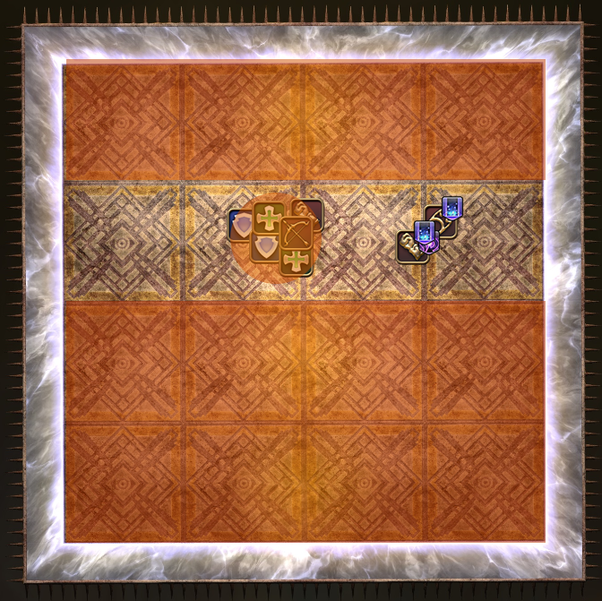Fire and ice are resolved the same way as Natural Alignment 1, just be mindful of the possible reversal. Since I showed Natural Alignment 1 with the melee flex, here is what it looks like with the tank flex.
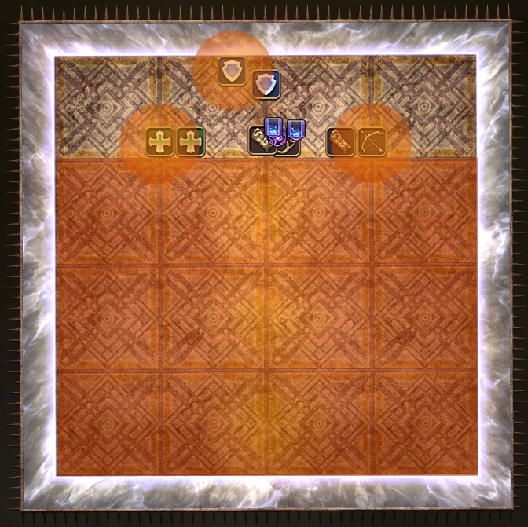 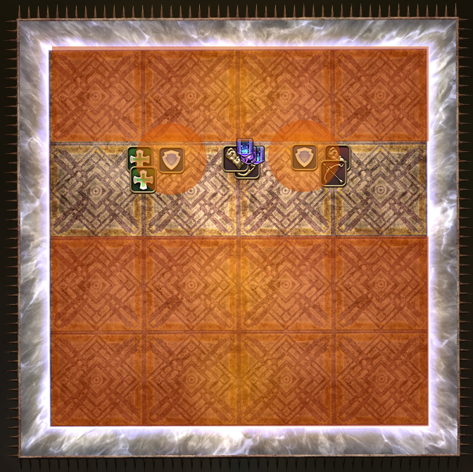Here is a video example of the mechanic with DPS players having Natural Alignment and tanks flexing.
Hephaistos will do an Ashing Blaze, then a raidwide and a tankbuster. Then he'll begin his second round of High Concept.
There is a slightly different set of debuffs for High Concept 2.
The short , , and players will go to the A / B / C markers like before. The two players with no debuff should be close to short , as they want to mix later on. The long ABG with the debuff should go to the 1 marker to not be near anyone. The long ABG with the and the long ABG with no second debuff should stack together on the 2 marker.
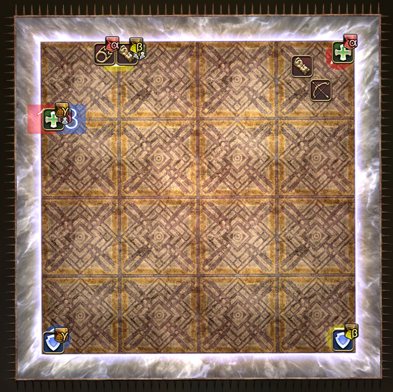Have the short ABG players mix depending on the tower. The two players who had no debuff must mix their in order to create two 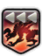 Ifrits. Don't forget to dodge the cleave.
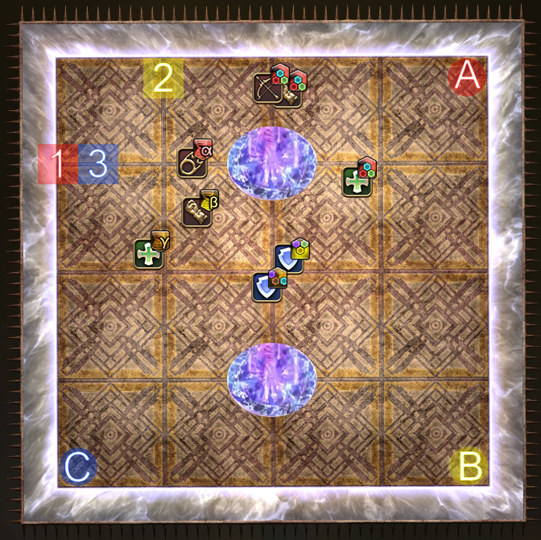 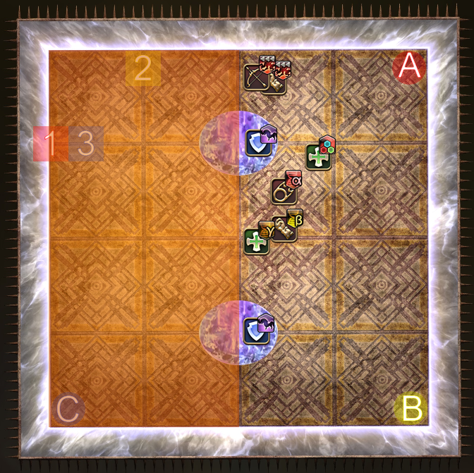Have the unused short ABG, the two players who just resolved towers, and the Ifrits all go NW. The long ABG players will go to A / B / C markers.
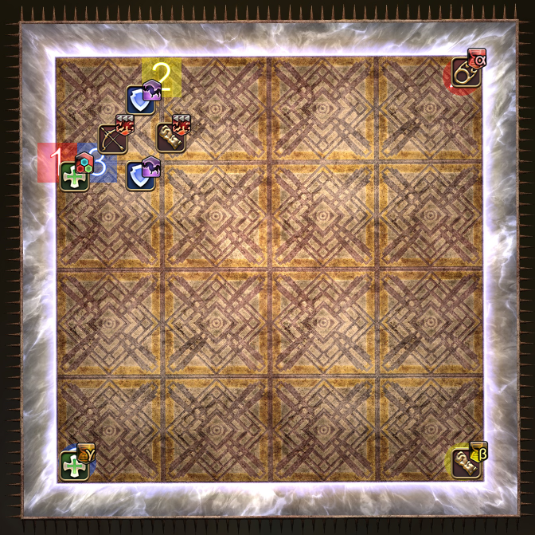Four towers will appear. and can always mix, and and the unused short ABG can always mix to resolve this mechanic. Have them mix and take towers.
Four adds will also spawn on cardinals. These will tether to the closest player, follow them, and do a line AOE after a few seconds. The two Ifrit players and the two players who resolved towers should bait these adds. Have players who took the previous set of towers take the North and South towers. The add they take should be the same one as the tower they took (North or South). The two Ifrit players will take the East and West add. They can pre-position in the NW corner before this part of the mechanic begins, or call it out in chat whether they are taking East or West. After the players are tethered to the adds, they should move clockwise and one square forward to bait the laser away from the center where the tower players are resolving. They move forward one square in order to avoid other baiters' lasers.
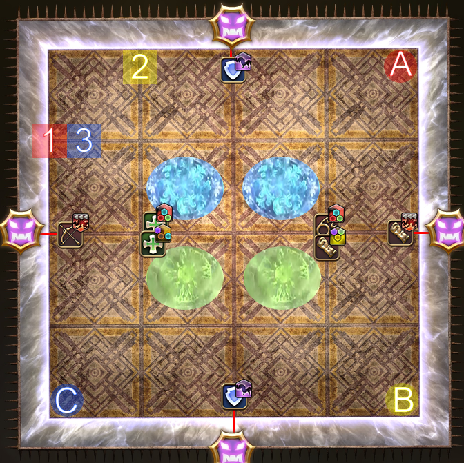 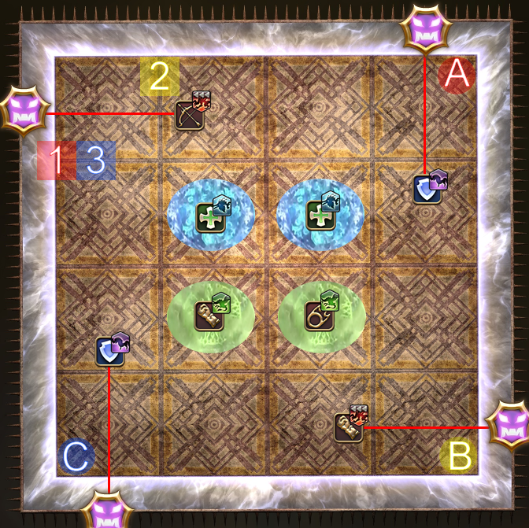After this, Hephaistos will begin casting Ego Death, a lethal raidwide that guarantees death. The four Ifrit and wind players need to mix with each other in order to create Immortal Spark. Having four Immortal Sparks on the field will grant everyone Immortal Conception, allowing the party to survive Ego Death. Players will need to be healed up to 100% before the Phoenix is made. Not being topped off will kill you, and you won't get the Phoenix buff later, guaranteeing enrage due to low DPS.
Here is a video example of the mechanic with short Alpha and North tower.
After a brief cutscene, you'll be in the final phase.
The power of the Phoenix revives the party and gives everyone the 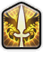 Everburn buff, massively increasing damage dealt. Hephaistos will begin the final phase with Aionagonia, which deals raidwide damage and inflicts a DoT. He will then begin casting Dominion, a heavy raidwide that also does four spread AOEs, two supports and two DPS. These spreads inflict Earth Resistance Down. He will spawn two sets of four towers that start at the center of the field and pop out near the edges. When they pop out, they must be soaked by one player or else everyone will receive a Damage Down, ensuring that you won't have enough DPS to clear.
My preferred strategy is THMR towers with designated flexes within each role type. Tanks take the left tower, healers take the second from the left, melees take the second from the right, and ranged DPS take the right tower. Do note that there will not always be two towers on the West side and two towers on the East side. It is possible for one side to have three towers, which is why it is important to keep your eyes peeled. Wait near the center to see where the towers are going, then follow it.
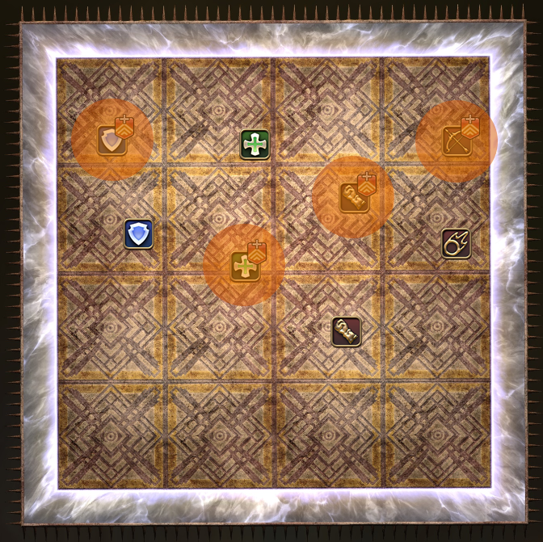 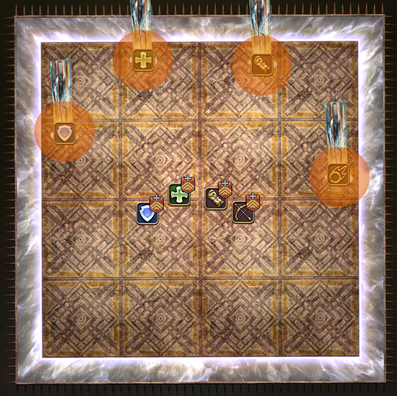 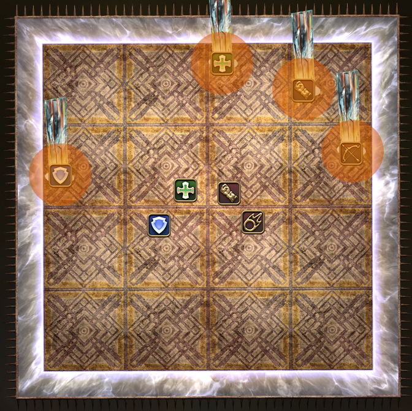It's possible for the same role type to get hit by the spreads. For example, both healers or both melees could get the first batch of Earth Resistance Down. We need flexes within each role type to handle this. Assign one person per role type to be a flexer (one tank, one healer, one melee, and one ranged DPS). In the above example, the tank who is flexing would take the other support tower, the healer's. The flexing ranged DPS would take the other DPS tower, the melee tower. When the healers and melees take their turn, their respective flexers shoud grab the tank tower and the ranged DPS tower.
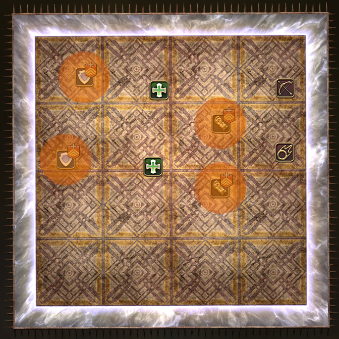 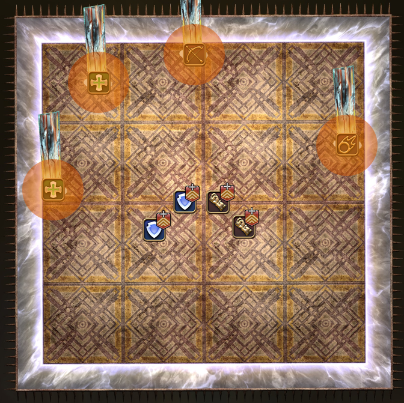 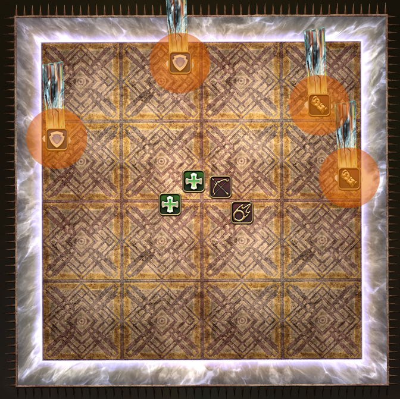Here is a video example where both melees get the debuff and the Bard and Ninja flex.
Hephaistos will do Dominion twice, then do a long-casted Ego Death serving as enrage.